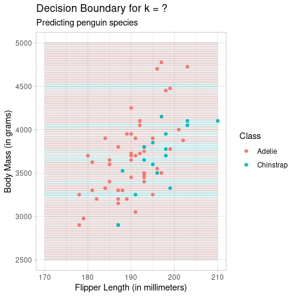

Lecture 21: Prediction II
STAT 20 UC Berkeley
First Things First
First Things First
Quiz 2 released tomorrow at 6:00p
Covers Week 5 material up until yesterday (Tuesday)
There will be a retake, similar to last Quiz
First Things First
Course Evaluations either available now or available soon
- Please answer the custom questions! (about how I did as a lecturer, content creator, class policies)
Today and tomorrow:
Today: Multiple Linear Regression, considerations for prediction
Tomorrow: The Data Analysis Pipeline in the Prediction Context; Inference with Linear Regression
Multiple Linear Regression
Multiple Linear Regression

When you buy a book off of Amazon, you get a quote for how much it costs to ship. This is based on the weight of the book. If you didn’t know the weight a book, what other characteristics of it could you measure to help predict weight?
Case Study: Amazon Books
- Consider the following data set, a simple random sample of 15 books from Amazon’s catalog where the weight of the books is known. It is called
allbacksand it belongs to theDAAGlibrary.
Case Study: Amazon Books
Here are the variables in this dataset (with documentation):
volume: book volumes in cubic centimetersarea: hard board cover areas in square centimeterscover: a factor with levels hb hardback, pb paperbackweight: book weights in grams
A simple linear model: predicting weight with volume
# A tibble: 15 × 2
weight volume
<dbl> <dbl>
1 800 885
2 950 1016
3 1050 1125
4 350 239
5 750 701
6 600 641
7 1075 1228
8 250 412
9 700 953
10 650 929
11 975 1492
12 350 419
13 950 1010
14 425 595
15 725 1034Predicting weight with volume: visualized
Predicting weight with volume: visualized
Predicting weight with volume
Call:
lm(formula = weight ~ volume, data = books)
Residuals:
Min 1Q Median 3Q Max
-189.97 -109.86 38.08 109.73 145.57
Coefficients:
Estimate Std. Error t value Pr(>|t|)
(Intercept) 107.67931 88.37758 1.218 0.245
volume 0.70864 0.09746 7.271 6.26e-06 ***
---
Signif. codes: 0 '***' 0.001 '**' 0.01 '*' 0.05 '.' 0.1 ' ' 1
Residual standard error: 123.9 on 13 degrees of freedom
Multiple R-squared: 0.8026, Adjusted R-squared: 0.7875
F-statistic: 52.87 on 1 and 13 DF, p-value: 6.262e-06What is the equation of the predicted line for this model?
Predicting weight with volume
- What is the equation for the line?
\[ \hat{y} = 107.7 + 0.708 x \]
- Or in words:
\[ \widehat{weight} = 107.7 + 0.708 volume \]
Multiple Linear Regression
Might we want to use some of the other variables in our Amazon dataset to predict the weight of books?
Multiple Linear Regression
Allows us to create a model to explain one numerical variable, the response, as a linear function of many explanatory variables that can be both numerical and categorical.
We posit a true model (here with a normal errors assumption):
\[ y = \beta_0 + \beta_1 x_1 + \beta_2 x_2 + \ldots + \beta_p x_p + \epsilon; \quad \epsilon \sim N(0, \sigma^2) \]
We use the data to estimate our fitted model:
\[ \hat{y} = b_0 + b_1 x_1 + b_2 x_2 + \ldots + b_p x_p \]
Estimating \(\beta_j\)’s
In least-squares regression, we’re still finding the estimates that minimize the sum of squared residuals.
\[ e_i = y_i - \hat{y}_i \]
\[ RSS = \sum_{i = 1}^n (y_i - \hat{y}_i)^2 \]
They do have a closed-form solution, but it uses matrix notation!
\[ \mathbf{b} = (X'X)^{-1}X'Y \]
Estimating \(\beta_j\)’s
- In R (this is just an example dataset called
mydatawith predictor columnsX1,X2, … ,Xp):
Shipping books: adding a categorical predictor
# A tibble: 15 × 3
weight volume cover
<dbl> <dbl> <fct>
1 800 885 hb
2 950 1016 hb
3 1050 1125 hb
4 350 239 hb
5 750 701 hb
6 600 641 hb
7 1075 1228 hb
8 250 412 pb
9 700 953 pb
10 650 929 pb
11 975 1492 pb
12 350 419 pb
13 950 1010 pb
14 425 595 pb
15 725 1034 pb Shipping books: adding a categorical predictor
Shipping books: adding a categorical predictor
Call:
lm(formula = weight ~ volume + cover, data = books)
Residuals:
Min 1Q Median 3Q Max
-110.10 -32.32 -16.10 28.93 210.95
Coefficients:
Estimate Std. Error t value Pr(>|t|)
(Intercept) 197.96284 59.19274 3.344 0.005841 **
volume 0.71795 0.06153 11.669 6.6e-08 ***
coverpb -184.04727 40.49420 -4.545 0.000672 ***
---
Signif. codes: 0 '***' 0.001 '**' 0.01 '*' 0.05 '.' 0.1 ' ' 1
Residual standard error: 78.2 on 12 degrees of freedom
Multiple R-squared: 0.9275, Adjusted R-squared: 0.9154
F-statistic: 76.73 on 2 and 12 DF, p-value: 1.455e-07How do we interpret these estimates?
Think about the geometry of the model given one numerical predictor and one categorical predictor.
Example: shipping books
MLR slope interpretation
The slope corresponding to the indicator variable tells us:
How much vertical separation there is between our lines
How much
weightis expected to increase ifcovergoes from 0 to 1 andvolumeis left unchanged.
Each \(b_j\) tells you how much you expect the \(Y\) to change when you change the \(X_i\), while holding all other variables constant.
Summarizing our Second Model
Call:
lm(formula = weight ~ volume + cover, data = books)
Residuals:
Min 1Q Median 3Q Max
-110.10 -32.32 -16.10 28.93 210.95
Coefficients:
Estimate Std. Error t value Pr(>|t|)
(Intercept) 197.96284 59.19274 3.344 0.005841 **
volume 0.71795 0.06153 11.669 6.6e-08 ***
coverpb -184.04727 40.49420 -4.545 0.000672 ***
---
Signif. codes: 0 '***' 0.001 '**' 0.01 '*' 0.05 '.' 0.1 ' ' 1
Residual standard error: 78.2 on 12 degrees of freedom
Multiple R-squared: 0.9275, Adjusted R-squared: 0.9154
F-statistic: 76.73 on 2 and 12 DF, p-value: 1.455e-07Interpret the \(R^2\) value here in the context of the problem.
Break
Overfitting
Linear Regression: The Problem with \(R^2\)
The Problem with \(R^2\): Case Study
Can we predict the price of Italian restaurants in Manhattan using predictors such as type of food, location and decor?
- Because we are thinking of using multiple predictors for a numerical outcome variable, multiple linear regression seems to be a fair choice.
The Problem with \(R^2\): Case Study
More info on our predictors:
Food,Decor, andServiceare coded numerically (numerical discrete)Eastis an indicator variable (categorical ordinal)
Two models to predict the price of a meal
Model 1
\[Price \sim Food + Decor\]
Model 2
\[Price \sim Food + Decor + East\]
The Problem with \(R^2\)
Two Variables
[1] "R^2: 0.616715637863424"Three Variables
[1] "R^2: 0.627880828606067"The Problem with \(R^2\)
Note that with the additional variable
Eastadded to the fray in the second model, our \(R^2\) jumped up.Just out of curiosity, what happens to the \(R^2\) if we continue to add some more variables to our model?
The Problem with \(R^2\)
Two Variables
[1] "R^2: 0.616715637863424"Three Variables
[1] "R^2: 0.627880828606067"
Four Variables
[1] "R^2: 0.631331727771204"Five Variables
[1] "R^2: 0.632374162495371"More variables, higher r-squared . . .
The problem with \(R^2\)

The problem with \(R^2\)
- Our existing statistic to measure how well the model captures the variability in the data is \(R^2\).
\[R^2 = \frac{SSR}{TSS}\]
- But by the above equation and by what we’ve seen empirically, \(R^2\) can never decrease when additional variables are added to the model!
Adjusted \(R^2\)
A more useful statistic when comparing MLR models of different complexities is adjusted \(R^2\), which balances the ability of the model to explain the data with its simplicity.
\[R^2_{adj} = 1 - \frac{1- SSR}{TSS} \cdot \frac{n - 1}{n - p - 1} \]
Case Study: Reporting both \(R^2\) and \(R^2_{adj}\)
Model 1
[1] "R^2: 0.616715637863424"[1] "Adjusted R^2: 0.612069766807223"Model 2
[1] "R^2: 0.627880828606067"[1] "Adjusted R^2: 0.621073770592763"
Model 3
[1] "R^2: 0.631331727771204"[1] "Adjusted R^2: 0.622284653606081"Model 4
[1] "R^2: 0.632374162495371"[1] "Adjusted R^2: 0.621027686029179"\(k\)-Nearest Neighbors: The choice of \(k\)
The choice of \(k\)
As we mentioned briefly yesterday, the choice of \(k\) will impact the predictions generated by \(k\)-nearest neighbors.
If \(k\) is small, the algorithm will be more local; if \(k\) is large, the algorithm will be more global.
- Less information used to predict a class versus more information used
The choice of \(k\) - Exercise
- Observe the following three plots. These plots show which points would result in a prediction for the red class using \(k\)NN and which points would result in a prediction for the blue class using \(k\)NN.

The choice of \(k\)
- Sort the following plots in ascending order by the size of \(k\) used.
The choice of \(k\)
Put another way:
When we increase \(k\):
We becomes less beholden to the location of our training data,
But, we run the risk of becoming too lax.
When we decrease \(k\):
Our decision boundary becomes less lax,
But, but we run the risk of becoming too beholden to the location of our training data.
The choice of \(k\) - finding the sweet spot
I used cross-validation to demonstrate how one would go about finding the best \(k\). Details in Lecture Code.
This involves splitting our training set further into a true training set and a validation set.
The choice of \(k\) - finding the sweet spot
- Based off of this image, it appears that \(k=3\) is a good choice.
End of Lecture 21